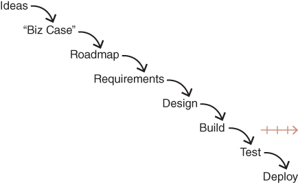

CHAPTER 6
The Root Causes of Failed Product Efforts
Let's start by exploring the root causes of why so many product efforts fail.
I see the same basic way of working at the vast majority of companies, of every size, in every corner of the globe, and I can't help but notice that this is not close to how the best companies actually work.
Let me warn you that this discussion can be a little depressing, especially if it hits too close to home, so if that's the case, I'll ask you to hang in there with me.
Figure 6.1 describes the process that most companies still use to create products. I'll try not to editorialize yet—let me first just describe the process:

FIGURE 6.1 Root Causes of Failed Product Efforts
As you can see, everything starts with ideas. In most companies, they're coming from inside (executives or key stakeholders or business owners) or outside (current or prospective customers). Wherever the ideas originate, there are always a whole bunch of things that different parts of the business need us to do.
Now, most companies want to prioritize those ideas into a roadmap, and they do this for two main reasons. First, they want us to work on the most important things first, and second, they want to be able to predict when things will be ready.
To accomplish this, there is usually some form of quarterly or annual planning session in which the leaders consider the ideas and negotiate a product roadmap. But in order to prioritize, they first need some form of a business case for each item.
Some companies do formal business cases, and some are informal, but either way it boils down to the need to know two things about each idea: (1) How much money or value will it make? and (2) How much money or time will it cost? This information is then used to come up with the roadmap, usually for the next quarter, but sometimes as much as a year out.
At this point, the product and technology organization has its marching orders, and they typically work the items from the highest priority on down.
Once an idea makes it to the top of the list, the first thing that's done is for a product manager to talk to the stakeholders to flesh out the idea and to come up with a set of “requirements.”
These requirements might be user stories, or they might be more like some form of a functional specification. Their purpose is to communicate with the designers and engineers what needs to be built.
Once the requirements are gathered up, the user experience design team (assuming the company has such a team), is asked to provide the interaction design, the visual design, and, in cases of physical devices, the industrial design.
Finally, the requirements and design specs make it to engineers. This is usually where Agile finally enters the picture.
Anyway, the engineers will typically break up the work into a set of iterations—called “sprints” in the Scrum process. So maybe it takes one to three sprints to build out the idea.
Hopefully the QA testing is part of those sprints, but if not, the QA team will follow this up with some testing to make sure the new idea works as advertised and doesn't introduce other problems (known as regressions).
Once we get the green light from QA, the new idea is finally deployed to actual customers.
In the majority of companies that I first meet, large and small, this is essentially how they work, and have worked, for many years. Yet these same companies consistently complain about the lack of innovation and the very long time it takes to make it from idea to customers' hands.
You might recognize that while I mentioned Agile, and while almost everyone today claims to be Agile, what I've just described is very much a waterfall process. In fairness to the engineers, they're typically doing about as much Agile as they can, given the broader waterfall context.
Okay, so that may be what most teams do, but why is that necessarily the reason for so many problems? Let's connect the dots now, so we can clearly see why this very common way of working is responsible for most failed product efforts.
In the list that follows, I'm going to share what I consider to be the top‐10 biggest problems with this way of working. Keep in mind that all 10 of these problems are very serious issues, any one of which could derail a team. But many companies have more than one or even all of these problems.
While almost everyone today claims to be Agile, what I've just described is very much a waterfall process.
We can't know how much money we'll make because that depends entirely on how good the solution turns out to be. If the team does an excellent job, this could be wildly successful and literally change the course of the company. The truth, however, is that many product ideas end up making absolutely nothing. And that's not an exaggeration for effect. Literally nothing (we know this from A/B testing).
In any case, one of the most critical lessons in product is knowing what we can't know, and we just can't know at this stage how much money we'll make.
Likewise, we have no idea what it will cost to build. Without knowing the actual solution, this is extremely hard for engineering to predict. Most experienced engineers will refuse to even give an estimate at this stage, but some are pressured into the old t‐shirt sizing compromise—just let us know if this is “small, medium, large, or extra large.”
But companies really want those prioritized roadmaps, and to get one, they need some kind of system to rate the ideas. So people play the business case game.
But here's the problem—maybe the biggest problem of all. It's what I call the two inconvenient truths about product.
The first truth is that at least half of our ideas are just not going to work.
The first truth is that at least half of our ideas are just not going to work. There are many reasons for an idea to not work out. The most common is that customers just aren't as excited about this idea as we are. So, they choose not to use it. Sometimes they want to use it and they try it out, but the product is so complicated that it's simply more trouble than it's worth, so users again choose not to use it. Sometimes the issue is that customers would love it, but it turns out to be much more involved to build than we thought, and we decide we simply can't afford the time and money required to deliver it.
So, I promise you that at least half the ideas on your roadmap are not going to deliver what you hope. (By the way, the really good teams assume that at least three quarters of the ideas won't perform like they hope.)
If that's not bad enough, the second inconvenient truth is that even with the ideas that do prove to have potential, it typically takes several iterations to get the implementation of this idea to the point where it delivers the necessary business value. We call that time to money.
One of the most important things about product that I've learned is that there is simply no escaping these inconvenient truths, no matter how smart you might be. And I've had the good fortune to work with many truly exceptional product teams. The real difference is how you deal with these truths.
The key principle in Lean methods is to reduce waste, and one of the biggest forms of waste is to design, build, test, and deploy a feature or product only to find out it is not what was needed. The irony is that many teams believe they're applying Lean principles; yet, they follow this basic process I've just described. And then I point out to them that they are trying out ideas in one of the most expensive, slowest ways we know.
It's no surprise that so many companies spend so much time and money and get so little in return. I warned you this could be depressing. But it's critical that you have a deep understanding of exactly why your company needs to change how it works, if, indeed, your company is working this way.
It's no surprise that so many companies spend so much time and money and get so little in return.
The good news is I promise you that the best teams operate nothing like what I've just described.